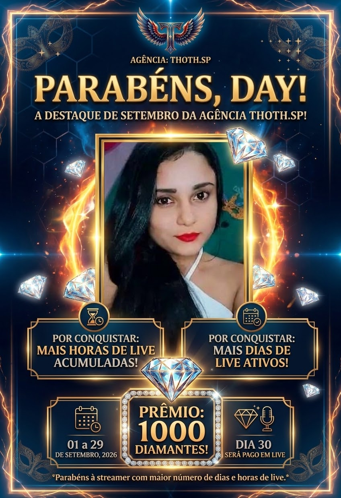
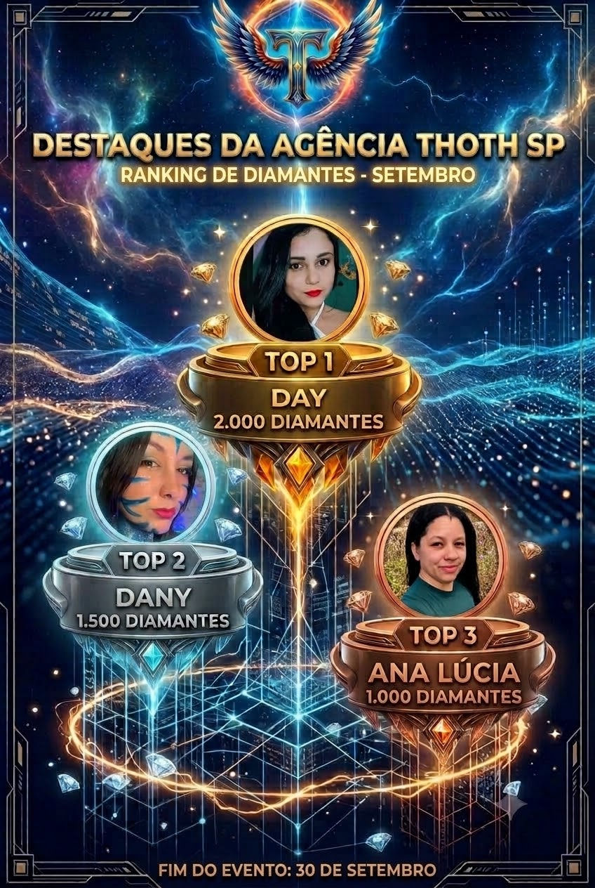
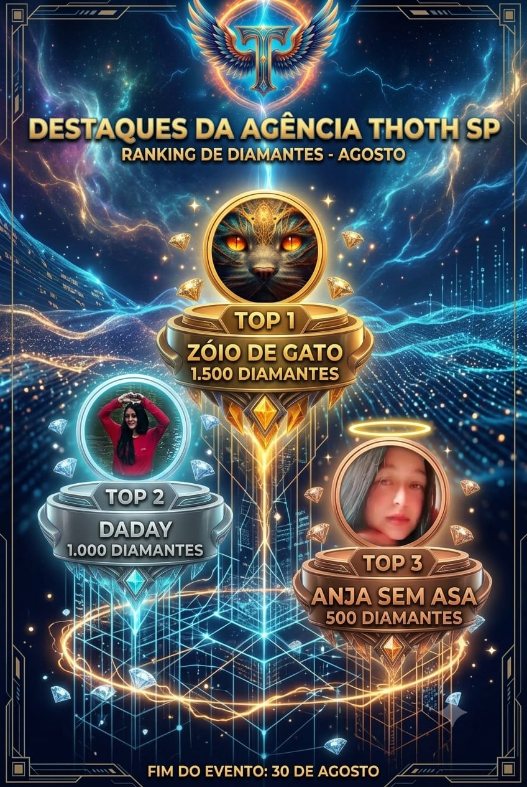

AGÊNCIA OFICIAL DE CRIADORES KWAI
Seu talento
merece ir mais longe.
Transforme suas lives em uma jornada com direção, apoio e reconhecimento. A próxima história de sucesso pode ser a sua.
T80✦
80 criadores
crescendo em comunidade
Desde 2024
construindo oportunidades
UMA COMUNIDADE QUE IMPULSIONATHOTH.SP ✦
COMUNIDADE80 criadores
SEU PRÓXIMO CAPÍTULOComeça ao vivo
✧
✦
✧
MAIS DO QUE UMA AGÊNCIAUm espaço para
Um espaço para
crescer junto.
Uma equipe próxima, uma comunidade ativa e espaço para cada criador construir seu próprio caminho.

RECONHECIMENTO QUE INSPIRA ✦
A SUA LIVE TEM POTENCIALVocê cria.
Descubra como participar ↗
Você cria.
A gente caminha junto.
A Thoth.SP acredita no poder de quem aparece, conversa e cria todos os dias. Aqui, você encontra incentivo para evoluir e uma comunidade que vibra com cada conquista.
01
Apoio de verdadeOrientação próxima para você avançar com confiança.
02
ReconhecimentoCelebramos quem se dedica e faz acontecer.
03
ComunidadeConexões com pessoas que entendem a sua jornada.
TALENTO EM EVIDÊNCIACada conquista
Cada conquista
merece brilhar.
Celebramos quem transforma consistência em resultado. Veja alguns dos destaques compartilhados pela nossa comunidade.


ROSTOS DA THOTHConheça quem
Conheça quem
faz parte da jornada.
Encontre nossos criadores no Kwai e acompanhe de perto o que acontece nas lives.
O PRÓXIMO NOME PODE SER O SEUVamos escrever
Vamos escrever
seu próximo capítulo?
Fale com a equipe e descubra como fazer parte da Agência Thoth.SP.
☎ Sanderlucio: (48) 99991-9017☎ Simone: (92) 9304-7541